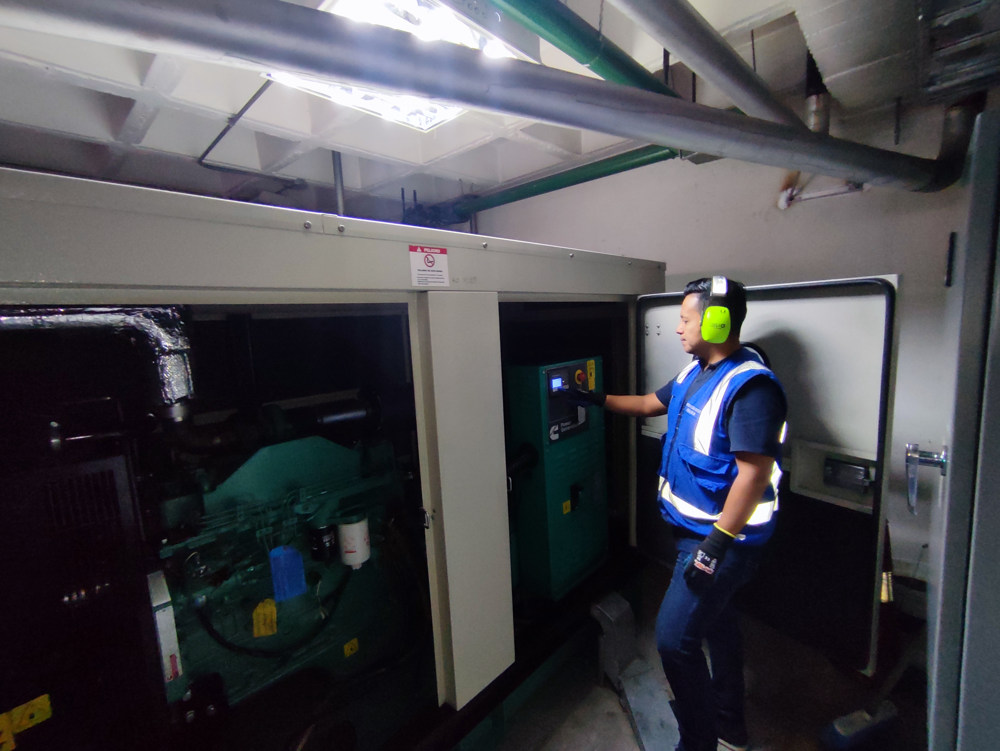
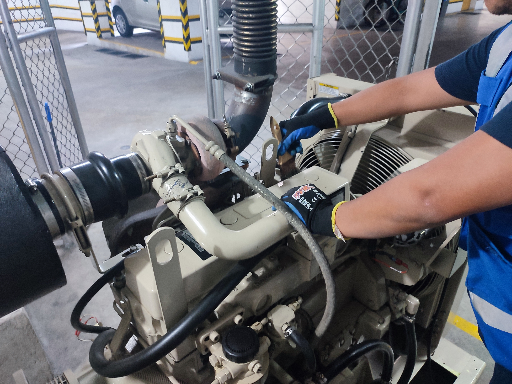
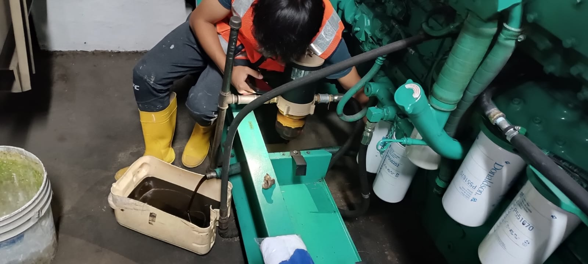
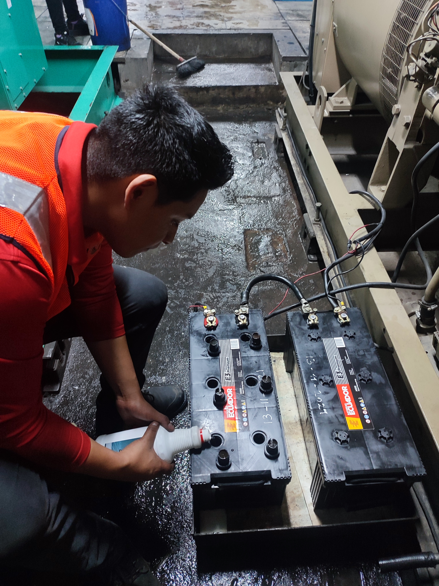
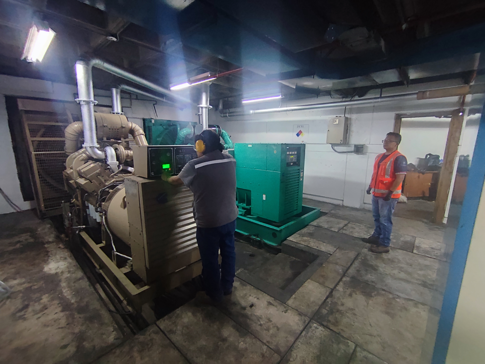

Ingeniería en Sistemas Industriales y Energía Renovable
Servicio técnico especializado para mantenimiento, diagnóstico e instalación de generadores eléctricos en aplicaciones industriales, comerciales y residenciales.
Revisión completa de filtros, sistema de combustible, sistema de enfriamiento y componentes eléctricos para asegurar el funcionamiento confiable del generador.
Diagnóstico de fallas eléctricas o mecánicas y reparación de componentes para restablecer el funcionamiento del equipo.
Instalación completa de generadores eléctricos con pruebas operativas, configuración de sistemas y puesta en marcha.
Instalación y mantenimiento de tableros de transferencia automática para respaldo eléctrico confiable.





Solicite una visita técnica o diagnóstico.